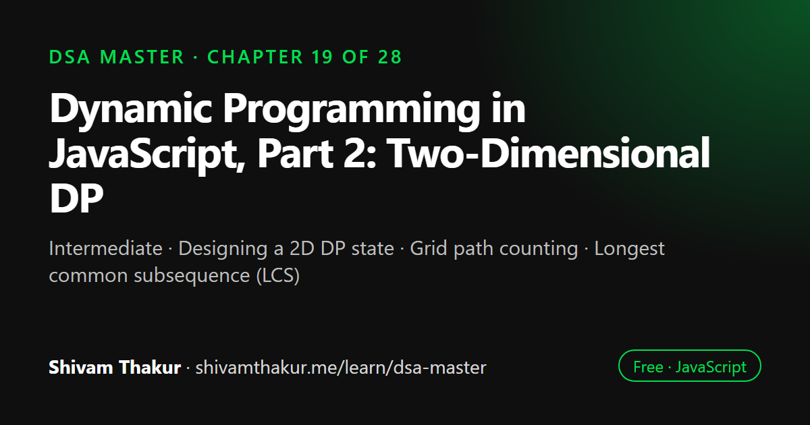

Chapter 19 of 28 · Intermediate
Dynamic Programming in JavaScript, Part 2: Two-Dimensional DP
The Dynamic Programming Masterclass, Part 2 — Two-Dimensional DP

Two-dimensional dynamic programming uses a table indexed by two values, such as positions in two strings or an item and a remaining capacity. This chapter applies the same five-step DP framework to grid path counting, longest common subsequence, edit distance and the 0/1 knapsack problem, and shows how to reduce each table to a single row.
In this chapter you will learn
- Designing a 2D DP state
- Grid path counting
- Longest common subsequence (LCS)
- Edit distance (Levenshtein)
- 0/1 knapsack and backward-iteration space optimization
19.0 When One Dimension Isn't Enough
Chapter 18's entire framework hinged on defining f(i) — a sub-problem indexed by a single number. But many real problems have two independent things varying simultaneously: two strings being compared character by character, an item-selection decision combined with a running budget, a position on a grid needing both a row and a column. This chapter extends the exact same five-step framework from Chapter 18 into two dimensions: f(i, j), a table instead of an array, but the identical underlying discipline.
19.1 Grid Path Counting: The Simplest Possible 2D DP
The problem: given an m x n grid, count the number of distinct paths from the top-left to the bottom-right corner, moving only right or down.
Applying the Five-Step Framework
- Define the sub-problem:
f(i, j)= the number of distinct paths from the top-left corner to cell(i, j). - Recurrence: to arrive at
(i, j), your last move was either from(i-1, j)(moving down) or(i, j-1)(moving right).f(i, j) = f(i-1, j) + f(i, j-1). - Base cases:
f(0, j) = 1for allj(only one way to reach any cell in the top row: move right the whole way).f(i, 0) = 1for alli(symmetric logic for the left column). - Bottom-up, filling the table row by row.
- Answer location:
f(m-1, n-1)— the bottom-right corner, directly.
function uniquePaths(m, n) {
const dp = Array.from({ length: m }, () => new Array(n).fill(1)); // top row & left column default to 1
for (let i = 1; i < m; i++) {
for (let j = 1; j < n; j++) {
dp[i][j] = dp[i - 1][j] + dp[i][j - 1];
}
}
return dp[m - 1][n - 1];
}
console.log(uniquePaths(3, 3)); // 6ASCII Visualization: The Filled Table
For a 3x3 grid:
dp[0][0]=1 dp[0][1]=1 dp[0][2]=1
dp[1][0]=1 dp[1][1]=2 dp[1][2]=3
dp[2][0]=1 dp[2][1]=3 dp[2][2]=6
Each interior cell = the cell ABOVE it + the cell to its LEFT.
dp[1][1] = dp[0][1] + dp[1][0] = 1 + 1 = 2
dp[2][2] = dp[1][2] + dp[2][1] = 3 + 3 = 6 <- FINAL ANSWERDirect Callback to Chapter 11's Implicit-Graph Lesson
This is a direct continuation of Chapter 11's "a grid with adjacency movement is an implicit graph" insight — here, the grid is an implicit DAG (Chapter 13!), where each cell has edges only to its right and down neighbors (no cycles possible, since movement only ever goes in two fixed directions). Counting paths in a DAG via DP, where f(i,j) sums contributions from predecessor cells, is a genuinely important, transferable pattern — the same "sum over all ways to arrive here" recurrence reappears constantly in path-counting and combinatorics-adjacent DP problems.
19.2 Longest Common Subsequence (LCS): The Foundational 2D String DP
The problem: given two strings, find the length of their longest common subsequence (characters in the same relative order, but not necessarily contiguous).
Applying the Five-Step Framework
- Define the sub-problem:
f(i, j)= the length of the LCS oftext1[0..i-1]andtext2[0..j-1](the firsticharacters oftext1and the firstjcharacters oftext2). - Recurrence — the key insight, worth deep understanding:
- If
text1[i-1] === text2[j-1](the characters currently being considered match): this character can always be part of some LCS, sof(i, j) = 1 + f(i-1, j-1)— extend the LCS found using one fewer character from each string. - If they don't match: the LCS must come from either dropping the current character of
text1or dropping the current character oftext2— take the best of those two options:f(i, j) = max(f(i-1, j), f(i, j-1)).
- If
- Base cases:
f(0, j) = 0andf(i, 0) = 0for alli, j(an empty string has an LCS of length 0 with anything). - Bottom-up, filling row by row.
- Answer location:
f(text1.length, text2.length).
function longestCommonSubsequence(text1, text2) {
const m = text1.length;
const n = text2.length;
const dp = Array.from({ length: m + 1 }, () => new Array(n + 1).fill(0));
for (let i = 1; i <= m; i++) {
for (let j = 1; j <= n; j++) {
if (text1[i - 1] === text2[j - 1]) {
dp[i][j] = 1 + dp[i - 1][j - 1];
} else {
dp[i][j] = Math.max(dp[i - 1][j], dp[i][j - 1]);
}
}
}
return dp[m][n];
}
console.log(longestCommonSubsequence('abcde', 'ace')); // 3 ("ace")Dry Run
text1='abcde', text2='ace'
"" a c e
"" [0, 0, 0, 0]
a [0, 1, 1, 1]
b [0, 1, 1, 1]
c [0, 1, 2, 2]
d [0, 1, 2, 2]
e [0, 1, 2, 3]
Building row for 'a' (i=1): text1[0]='a'
j=1 (text2[0]='a'): MATCH! dp[1][1] = 1 + dp[0][0] = 1+0 = 1
j=2 (text2[1]='c'): no match. dp[1][2] = max(dp[0][2], dp[1][1]) = max(0,1) = 1
j=3 (text2[2]='e'): no match. dp[1][3] = max(dp[0][3], dp[1][2]) = max(0,1) = 1
Building row for 'c' (i=3): text1[2]='c'
j=2 (text2[1]='c'): MATCH! dp[3][2] = 1 + dp[2][1] = 1+1 = 2
Building row for 'e' (i=5): text1[4]='e'
j=3 (text2[2]='e'): MATCH! dp[5][3] = 1 + dp[4][2] = 1+2 = 3
Final: dp[5][3] = 3 ✓ (LCS is "ace")19.3 Edit Distance (Levenshtein Distance): Three-Way Recurrence
The problem: given two strings, find the minimum number of operations (insert, delete, or replace a single character) needed to transform one into the other.
Applying the Five-Step Framework
- Define the sub-problem:
f(i, j)= the minimum number of operations to transformword1[0..i-1]intoword2[0..j-1]. - Recurrence:
- If
word1[i-1] === word2[j-1]: no operation needed for this character pair —f(i, j) = f(i-1, j-1)(directly inherit the sub-problem's answer, unchanged). - If they don't match, we must perform exactly one operation, and we want the cheapest of the three options:
- Replace:
1 + f(i-1, j-1)(fix this character pair directly, then solve the rest). - Delete (from
word1):1 + f(i-1, j)(remove this character fromword1, then match the rest). - Insert (into
word1, matchingword2's character):1 + f(i, j-1)(add a character, then match the remainder ofword2).
- Replace:
f(i, j) = 1 + min(f(i-1, j-1), f(i-1, j), f(i, j-1))
- If
- Base cases:
f(0, j) = j(transforming an empty string into aj-length string requiresjinsertions).f(i, 0) = i(symmetric —ideletions). - Bottom-up.
- Answer location:
f(word1.length, word2.length).
function minDistance(word1, word2) {
const m = word1.length;
const n = word2.length;
const dp = Array.from({ length: m + 1 }, () => new Array(n + 1).fill(0));
for (let i = 0; i <= m; i++) dp[i][0] = i;
for (let j = 0; j <= n; j++) dp[0][j] = j;
for (let i = 1; i <= m; i++) {
for (let j = 1; j <= n; j++) {
if (word1[i - 1] === word2[j - 1]) {
dp[i][j] = dp[i - 1][j - 1];
} else {
dp[i][j] = 1 + Math.min(
dp[i - 1][j - 1], // replace
dp[i - 1][j], // delete
dp[i][j - 1] // insert
);
}
}
}
return dp[m][n];
}
console.log(minDistance('horse', 'ros')); // 319.4 The 0/1 Knapsack Problem: The Canonical Constrained-Optimization DP
The problem: given items with weights and values, and a weight capacity, maximize total value without exceeding the capacity — each item can be used at most once (hence "0/1": include it or don't, no fractional or repeated use).
Applying the Five-Step Framework
- Define the sub-problem:
f(i, w)= the maximum value achievable using only the firstiitems, with a weight capacity ofw. - Recurrence — the "include or exclude" pattern from Chapter 18, now with a second dimension for the constraint:
- If including item
iwould exceed the current capacity (weights[i-1] > w): we must exclude it.f(i, w) = f(i-1, w). - Otherwise, choose the better of excluding it (
f(i-1, w)) or including it (values[i-1] + f(i-1, w - weights[i-1])). f(i, w) = max(f(i-1, w), values[i-1] + f(i-1, w - weights[i-1]))(when the item fits).
- If including item
- Base case:
f(0, w) = 0for allw(zero items considered means zero value, regardless of capacity). - Bottom-up.
- Answer location:
f(n, capacity).
function knapsack(weights, values, capacity) {
const n = weights.length;
const dp = Array.from({ length: n + 1 }, () => new Array(capacity + 1).fill(0));
for (let i = 1; i <= n; i++) {
for (let w = 0; w <= capacity; w++) {
if (weights[i - 1] > w) {
dp[i][w] = dp[i - 1][w]; // item doesn't fit — forced exclusion
} else {
dp[i][w] = Math.max(
dp[i - 1][w], // exclude item i
values[i - 1] + dp[i - 1][w - weights[i - 1]] // include item i
);
}
}
}
return dp[n][capacity];
}
console.log(knapsack([1, 3, 4, 5], [1, 4, 5, 7], 7)); // 9 (items with weight 3+4=7, value 4+5=9)19.5 Edge Cases and Gotchas Checklist for 2D DP Problems
- Empty string/array inputs for either dimension. Verify base cases (
f(0, j)andf(i, 0)) are correctly initialized before the main double loop runs. - Off-by-one indexing between the
dptable's indices and the original string/array's indices — this chapter's convention (dp[i][j]representing "firsticharacters") requires consistently usingtext[i-1](nottext[i]) inside the loop body; a very common, easy-to-miss source of bugs. - 2D-to-1D space optimization direction — always verify whether the recurrence requires forward or backward inner-loop iteration once compressed to 1D (Knapsack needs backward; Unique Paths, relying only on the row above and current row so far, works forward).
- Confusing which two quantities the two dimensions represent — always explicitly state, in your own words, what varies along each axis of the table before writing the recurrence.
- Reconstructing the actual sequence/path (not just its length/value) — many 2D DP problems (LCS, Edit Distance) are frequently extended to ask for the actual subsequence or operations, requiring a backward walk through the completed
dptable, tracing which recurrence branch was taken at each cell (included in this chapter's coding problems).
19.6 Chapter Summary
This chapter extended Chapter 18's five-step DP framework into two dimensions, and the throughline across all four worked problems is that the framework itself never changed — only the number of quantities the sub-problem definition needs to track. Grid path counting introduced the simplest possible 2D case, f(i,j) = f(i-1,j) + f(i,j-1), directly connecting back to Chapter 11's implicit-graph insight (the grid as an implicit DAG, per Chapter 13's vocabulary) and Chapter 13's path-counting-via-summing-predecessors idea, while demonstrating the same space-compression instinct from Chapter 18 (only the immediately preceding row is ever needed, collapsing O(mn) to O(n) space).
Longest Common Subsequence established the foundational string-comparison recurrence — match, extend diagonally; no match, take the best of above or left — worth internalizing as a single memorable sentence, since it's the direct ancestor of an entire family of "secretly an LCS problem" variants (longest common substring, shortest common supersequence, minimum deletions to make two strings equal). Edit Distance extended this into a genuinely three-way recurrence, and we were careful to build real understanding (not just recite the formula) for why each of its three terms corresponds precisely to one of insert, delete, and replace — a distinction worth being able to explain in plain English, given the algorithm's outsized real-world importance in spell-checking, bioinformatics sequence alignment, and diff tooling.
The 0/1 Knapsack problem closed the chapter by making explicit a generalization worth carrying forward: 1D "include or exclude" DP (House Robber, Chapter 18) tracks just a position; 2D "include or exclude" DP additionally tracks a consumable resource that choices deplete — the natural next step in DP sophistication once a simple positional constraint isn't enough. We closed with a genuinely important, easy-to-miss space-optimization subtlety: compressing Knapsack's 2D table to 1D requires iterating the capacity dimension backward, or the algorithm silently (and incorrectly) permits reusing the same item multiple times — a direct structural parallel to Chapter 18's coin-change loop-ordering lesson, reinforcing that in DP, the direction and order of iteration is often just as consequential to correctness as the recurrence relation itself.
19.7 Revision Notes
- The five-step DP framework from Chapter 18 extends unchanged into 2D — only the sub-problem's definition needs an extra dimension, not the process itself.
- Grid path counting (f(i,j) = f(i-1,j) + f(i,j-1)) is a grid-as-implicit-DAG path-counting problem, directly connecting Chapters 11 and 13; space-compressible from O(mn) to O(n) since only the previous row is needed.
- LCS recurrence: match → diagonal + 1; no match → max(above, left). This single sentence anchors an entire family of "secretly LCS" string problems.
- Edit Distance's three-way recurrence (replace/delete/insert) requires understanding, not just memorizing, why each term maps to its specific operation — real-world value in spell-checking, bioinformatics, and diff tools.
- 0/1 Knapsack generalizes House Robber's "include or exclude" pattern by adding a resource-budget dimension — the natural progression from 1D to 2D "include or exclude" DP.
- Knapsack's 1D space optimization requires iterating the capacity dimension BACKWARD, or items get incorrectly reused — a direct structural parallel to Chapter 18's coin-change loop-order lesson.
19.8 Mind Map (ASCII)
DYNAMIC PROGRAMMING (PART 2: 2D)
|
+------------------+-------+-------+------------------------+
| | | |
GRID PATH LCS (STRING EDIT DISTANCE 0/1 KNAPSACK
COUNTING DP FOUNDATION) (3-way recurrence) (constrained
| | | optimization)
f(i,j)=f(i-1,j) Match: diagonal Match: inherit |
+f(i,j-1) +1 diagonally "Include or exclude"
| No match: max No match: 1+min( + RESOURCE dimension
= implicit DAG (above, left) replace-diag, (generalizes Ch.18's
path counting | delete-above, House Robber!)
(Ch.11/Ch.13 "Secretly LCS" insert-left) |
callback) family: longest | f(i,w)=max(exclude,
| common substring, Real-world: include value+
Space: O(mn)-> supersequence, spell-check, f(i-1,w-weight))
O(n) (only prev min deletions bioinformatics, |
row needed) diff tools Space opt: 1D array,
iterate w BACKWARD
(or items get
reused -- echoes
Ch.18 coin-change
loop-order lesson!)19.9 Cheat Sheet
2D DP RECURRENCES QUICK REFERENCE
=====================================
Grid Paths: f(i,j) = f(i-1,j) + f(i,j-1)
base: f(0,j)=1, f(i,0)=1
LCS: match: f(i,j) = 1 + f(i-1,j-1)
no match: f(i,j) = max(f(i-1,j), f(i,j-1))
base: f(0,j)=0, f(i,0)=0
Edit Distance: match: f(i,j) = f(i-1,j-1)
no match: f(i,j) = 1 + min(f(i-1,j-1), f(i-1,j), f(i,j-1))
[replace] [delete] [insert]
base: f(0,j)=j, f(i,0)=i
0/1 Knapsack: f(i,w) = f(i-1,w) if weight[i-1] > w
f(i,w) = max(f(i-1,w), value[i-1]+f(i-1,w-weight[i-1])) otherwise
base: f(0,w) = 0
SPACE OPTIMIZATION DIRECTION CHECK
======================================
Grid Paths / LCS / Edit Distance: forward iteration OK (only need previous row)
0/1 Knapsack: MUST iterate capacity BACKWARD when compressed to 1D,
or items get incorrectly reused (same bug class as Ch.18 coin-change
loop order!)
PATTERN RECOGNITION
=======================
"two strings, common/matching structure" -> LCS family
"transform one string into another, min ops" -> Edit Distance
"items with weight/value, capacity limit" -> 0/1 Knapsack
"count/find paths on a grid" -> Grid DP (implicit DAG)19.10 Key Takeaways
- The five-step DP framework is unchanged in 2D — only the sub-problem definition grows an extra dimension.
- LCS's "match diagonal, else max(above,left)" recurrence anchors an entire family of string-comparison DP problems.
- Edit Distance's three-way recurrence must be understood term-by-term (replace/delete/insert), not just memorized — it has major real-world applications beyond interviews.
- 0/1 Knapsack generalizes House Robber's include/exclude pattern with an added resource-budget dimension.
- Knapsack's space optimization requires backward iteration over the capacity dimension — forgetting this silently turns 0/1 Knapsack into unbounded knapsack, a different, incorrect problem.
19.11 20 Multiple Choice Questions
Tap an answer to check it. Your score updates as you go.
Score: 0 / 0 answered (20 questions)
What is the recurrence for counting unique paths in a grid (moving only right or down)?
What does f(i,j) represent in the Longest Common Subsequence DP formulation?
In LCS, what happens when the current characters being compared MATCH?
In LCS, what happens when the current characters DON'T match?
What are the three operations considered in Edit Distance's recurrence?
In Edit Distance, what is the recurrence when characters match?
In Edit Distance, what is the recurrence when characters don't match?
What real-world applications rely on Edit Distance beyond coding interviews?
What does the 0/1 in "0/1 Knapsack" refer to?
What is the 0/1 Knapsack recurrence when an item's weight exceeds the current capacity?
What earlier chapter's problem does 0/1 Knapsack directly generalize?
What is the key difference between 0/1 Knapsack and House Robber's DP structure?
Why must the capacity dimension be iterated BACKWARD when space-optimizing 0/1 Knapsack to 1D?
What earlier chapter's lesson does the Knapsack backward-iteration requirement directly parallel?
What does grid path counting's DP have in common with earlier graph chapters?
What is the space complexity after optimizing grid path counting from a full 2D table to a compressed version?
What is a "secretly LCS" problem, according to this chapter?
What must be verified before assuming a 2D DP table's base cases are correct?
What is a common indexing pitfall in 2D DP where dp[i][j] represents "first i characters"?
What should you do if a problem asks for the ACTUAL subsequence/path, not just its length/value?
Show the answer key
1-b, 2-b, 3-b, 4-b, 5-b, 6-b, 7-b, 8-b, 9-b, 10-a, 11-b, 12-b, 13-b, 14-b, 15-b, 16-b, 17-b, 18-b, 19-b, 20-b
19.12 20 Coding Problems
Easy
- Implement
uniquePathsfrom memory (section 19.1), then the O(n)-space optimized version. - Given a grid with some obstacles, adapt
uniquePathsto count paths while treating obstacle cells as impassable (dp value 0). - Given a grid of costs, find the minimum cost path from top-left to bottom-right, moving only right or down.
- Implement
longestCommonSubsequencefrom memory (section 19.2). - Given two strings, determine if one is a subsequence of the other (a simpler special case related to LCS).
Medium
- Implement
minDistance(Edit Distance) from memory (section 19.3), and verify against a known example. - Implement
knapsack(0/1 Knapsack, full 2D version) from memory (section 19.4). - Implement the space-optimized 1D version of Knapsack from memory, being careful about the backward iteration direction.
- Given two strings, find the length of their longest common SUBSTRING (contiguous, unlike LCS), and contrast the recurrence with LCS's in a comment.
- Given two strings, find the minimum number of deletions required to make them equal (hint: relates directly to LCS length).
Hard
- Given the completed LCS dp table, write a function to reconstruct the ACTUAL longest common subsequence string (not just its length), by walking backward through the table.
- Given the completed Edit Distance dp table, write a function to reconstruct the actual sequence of operations (insert/delete/replace) used to transform one string into the other.
- Implement "Shortest Common Supersequence": given two strings, find the shortest string that has both as subsequences, building on your LCS implementation.
- Given a set of numbers and a target sum, determine if the set can be partitioned into two subsets with equal sum (a direct application of the Subset Sum / Knapsack-style DP from Chapter 18/19).
- Implement the "unbounded knapsack" variant (each item can be used unlimited times, unlike 0/1 Knapsack), and explicitly contrast its loop-order/iteration-direction requirements against the 0/1 version's backward-iteration requirement.
Interview Level
- (Google-level) Given a document similarity checker requirement, use Edit Distance to compute a similarity score between two text documents, and discuss in comments the practical limitations of character-level edit distance for genuinely semantic (not just textual) similarity.
- (Amazon-level) Given a warehouse packing problem (items with weights/values, truck capacity), implement 0/1 Knapsack to maximize shipped value, and extend it to also report WHICH items were selected (not just the total value), using backward table reconstruction.
- (Microsoft-level) Given a DNA sequence alignment task (two genetic sequences), use a variant of Edit Distance (with different costs for different mismatch types, a realistic bioinformatics requirement) to compute an optimal alignment score.
- (Meta-level) Given two users' post histories (as sequences of topic tags), use LCS to compute a "content similarity" score between users, useful for a friend-suggestion or content-recommendation feature.
- (Netflix-level) Design a "recommendation path" system: given a grid representing content categories a user could navigate through (browsing paths), use grid DP to count and find the highest-engagement path through the category grid, extending the basic path-counting DP to a path-optimization variant (maximum sum path, not just path count).
19.13 5 Interview Questions
- "Implement Longest Common Subsequence, and explain the recurrence in plain English." (Tests the "match diagonal, else max of neighbors" understanding, not just code recall.)
- "Walk me through Edit Distance's recurrence and explain what each of the three terms represents." (Tests genuine understanding of insert/delete/replace mapping, not memorization.)
- "Implement 0/1 Knapsack, and tell me how it relates to House Robber from Chapter 18." (Tests the generalization insight — resource-constrained include/exclude DP.)
- "If you space-optimize Knapsack to a 1D array, what direction must you iterate, and why?" (Tests the critical backward-iteration correctness subtlety.)
- "How would you count the number of paths in a grid, and how does this relate to graph theory?" (Tests the implicit-DAG connection back to Chapters 11 and 13.)
19.14 3 Real Projects
- Complete 2D DP Problem Library: Implement Grid Paths, LCS, Edit Distance, and 0/1 Knapsack (both full 2D and space-optimized 1D versions) in a single library, with a self-check script verifying the 1D and 2D versions of each produce identical results.
- Diff Tool: Build a small Node.js CLI tool that takes two text files and uses Edit Distance's backward-table-reconstruction technique (coding problem #12) to report the actual sequence of insert/delete/replace operations needed to transform one into the other — a genuine, practical diff tool built entirely from this chapter's algorithm.
- Knapsack Packing Optimizer: Build a tool implementing 0/1 Knapsack with item selection reporting (coding problem #17), taking a list of items with weights/values and a capacity, and reporting both the maximum achievable value AND the specific items chosen to achieve it.
19.15 Further Reading
- Vladimir Levenshtein's original 1965 paper introducing the edit distance metric that bears his name.
- Search "Wagner-Fischer algorithm" for the specific dynamic programming formulation of Edit Distance covered in this chapter, and its formal computational complexity history.
- Steven Skiena, The Algorithm Design Manual, chapters on dynamic programming and string algorithms, for additional real-world framing of LCS and Edit Distance applications in bioinformatics specifically.
- LeetCode's "Dynamic Programming" problem tag filtered to 2D DP problems (Unique Paths, Longest Common Subsequence, Edit Distance, and the various Knapsack-family problems), for extensive additional practice.
2D Dynamic Programming: frequently asked questions
What is the longest common subsequence problem?
LCS finds the longest sequence of characters that appears in the same order in two strings, not necessarily contiguously. With a 2D table, dp[i][j] is the diagonal value plus one when characters match, otherwise the larger of the cell above and the cell to the left.
What is edit distance used for?
Edit distance, or Levenshtein distance, counts the minimum insertions, deletions and replacements needed to turn one string into another. It powers spell checkers, fuzzy search, diff tools and DNA sequence comparison.
What is the 0/1 knapsack problem?
Given items with weights and values and a capacity limit, choose items to maximize total value without exceeding the capacity, taking each item at most once. It runs in O(n × W) time, where W is the capacity.
Why must the knapsack capacity loop run backwards in the 1D version?
With a single array, iterating capacity downwards ensures each item is counted at most once. Iterating forwards reuses the updated values from the same item, which silently turns it into the unbounded knapsack problem.